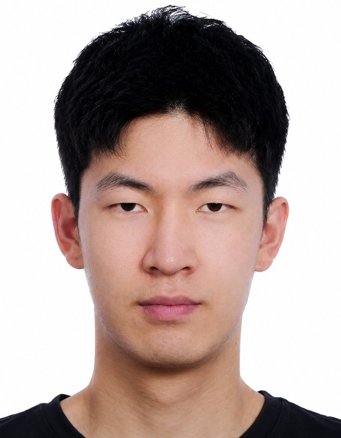

Instance Segmentation Under Occlusion
First-person maize segmentation pushed me toward instance ownership, ignore regions, and annotation tools that can handle disconnected visible parts instead of assuming one clean object mask.
Computer Vision · Multimodal Learning · Research Systems
I am an undergraduate researcher in Software Engineering at Beijing University of Technology. My work spans computer vision, multimodal learning, medical imaging, agricultural vision, embodied intelligence, and AR/XR interaction.

I am interested in vision problems where the data is not clean, centered, or neatly labeled: occluded field images, anisotropic medical volumes, EEG-guided perception, and real-time interaction systems. I prefer research that starts from a difficult setting and then builds the tools, data, and models needed to make the setting measurable.
First-person maize segmentation pushed me toward instance ownership, ignore regions, and annotation tools that can handle disconnected visible parts instead of assuming one clean object mask.
My medical imaging work combines practical detection pipelines, point-cloud visualization, and segmentation-model comparison under limited and irregular clinical data.
I am exploring whether noisy, low-bandwidth EEG signals can provide useful cognitive cues for region-level visual localization beyond ordinary classification.
I also care about vision components that operate inside interactive systems, where spatial tracking, perception cues, and latency constraints shape what an algorithm can actually do.
Recent work focuses on benchmarks and robust perception pipelines for difficult real-world data.
Independent first author. Project page, dataset, and code are planned for release.
First author. Accepted and EI indexed.
I like building research infrastructure around hard annotation and perception problems: not only models, but also datasets, tools, validation protocols, and reproducible pipelines.
A visual annotation platform for complex instance segmentation, with one-instance-multiple-polygons editing, SAM-based pre-annotation, fine-tuning support, quality control, and batch COCO I/O.
A pipeline linking continuous EEG processing, visual-region feature extraction, representation design, and multimodal alignment for region-level visual grounding.
A slice-wise Hough and DBSCAN-based marker reconstruction workflow extended to CT point-cloud visualization and registration with PyQt5 and Open3D.
A mobile tool for corn-breeding fieldwork, replacing fragmented paper records with structured local-first storage, synchronization, recovery, and operational data management.
Research and engineering experiences that shaped my current direction.
Computer vision and XR interaction, with attention to tracking cues and low-latency perception pipelines.
Technical organization, literature review, and planning support for an intelligent-agent research project.
B.Eng. in Software Engineering, Experimental Class. ACM selection team captain.
A reserved space for a short personal note about research taste, long-term questions, or the kind of systems I want to build.
This paragraph is intentionally left open for a more personal statement.
I work mostly in Python and PyTorch, with practical experience across annotation systems, medical imaging, 3D processing, mobile development, and dataset engineering.